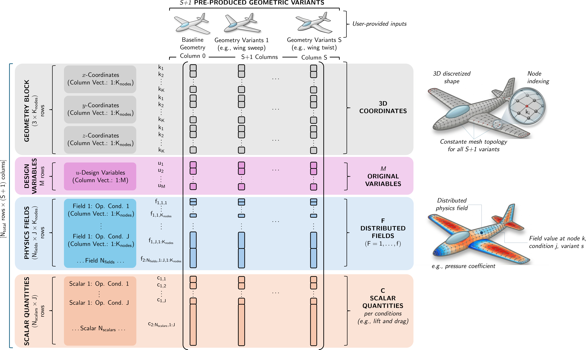

Input data structure
PME-toolkit operates on datasets describing the variability of parametric geometries.
Data components
A dataset typically includes:
- geometric data
- design variables
- optional physical quantities (PI-PME / PD-PME)
Global data matrix
PME-toolkit represents all information through a block-structured data matrix, where each column corresponds to one design realization.

Figure: Structure of the PME data matrix. Geometry, design variables, optional distributed fields, and scalar quantities are stacked into a single matrix. This unified representation enables dimensionality reduction while preserving the link to the original parametric variables.
Geometry representation
Geometry is represented as a matrix:
Where:
- n_samples = number of design realizations
- n_features = number of geometric degrees of freedom
Typical cases:
- 2D geometry → stacked coordinates
- 3D geometry → flattened mesh nodes
Example:
[x1, x2, ..., xN
y1, y2, ..., yN
z1, z2, ..., zN]
Design variables
Design variables are stored as:
These correspond to the original parametric model and are explicitly included in the data matrix, enabling analytical backmapping from the reduced space.
PME embedding matrix
PME internally constructs:
This is the matrix used for dimensionality reduction.
Optional physical data
For PI-PME / PD-PME, additional matrices may be included:
- pressure fields
- performance indicators
These are appended as additional rows in P, extending the embedding with physical information.
Key requirement
All data must be:
- aligned sample-wise
- consistent in dimension
- free of missing values (after filtering)
Summary
The entire PME workflow relies on a consistent data matrix representation, where each column represents one design realization and multiple data sources are combined into a unified embedding space.